Tide Tracker — Overview
Published on August 8, 2024
Introduction and Motivation
I designed and assembled two solar-powered tide trackers. I had roughly one month to complete the project from its conceit in late November of 2023 to its completion in early January of 2024. The project was primarily written in Python, and the plots were created using the Matplotlib and SciPy packages.
The tide tracker device plots the tide height vs. time at a given location and displays the plot on an e-ink display. The data is publicly available online from the National Oceanic and Atmospheric Administration (NOAA).
The first tide tracker was a gift for a friend who lives directly on the water, and the second was a gift for a family member who likes to go sailing on a nearby river. In the gif below, you can see the graph undergoing an update, which occurs every two hours.
The code for the project can be found at github.com/briansgithub/TideTracker_repo
Tide Tracker 1 — Location: Fort Myers, FL
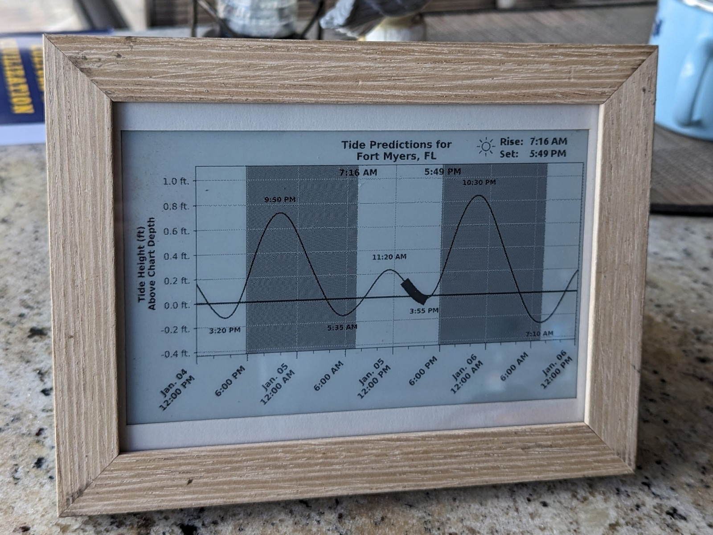
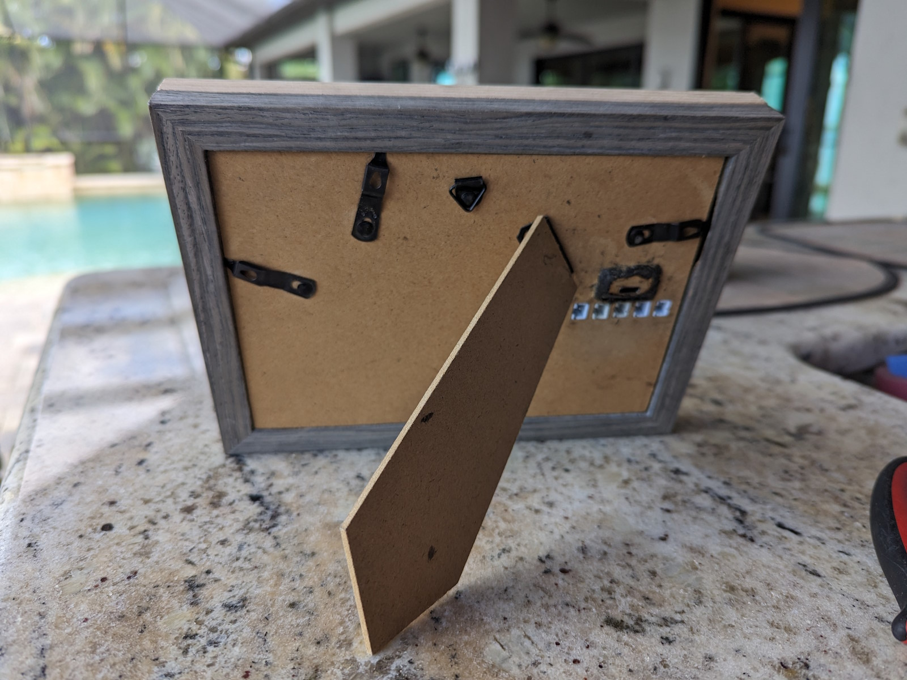
Tide Tracker 2 — Location: Red Bank, NJ
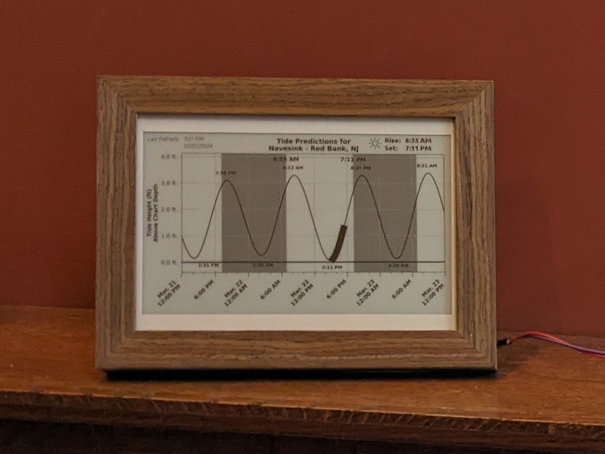
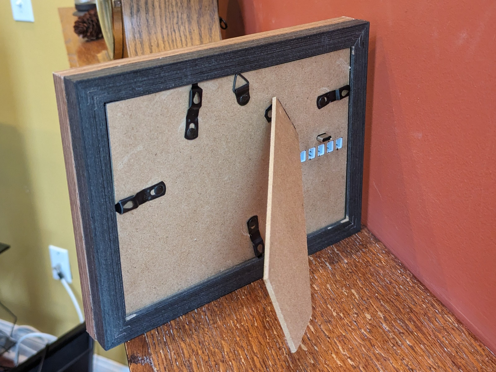
I decided to make two tide trackers for several reasons:
- The two recipients live near different rivers.
- The picture frames ship from Amazon as a four-pack at a low unit price. In order to fit all of the components into one enclosure, I had to stack and glue two frames on top of each other. Two of the frames match the lighter, sandy color scheme of my friend's house, and the other two match the darker, rustic color scheme of my family member's house. Perfect.
- Nearly 80% of the total time and effort for the project went into designing the physical layout and writing the code. These are one-time overhead costs, so the development work from the first unit can simply be used for free on all subsequent units (except for the cost of the parts and the time and energy required for the assembly of each unit, which are still substantial).
Constraints
- Monetary cost — This constraint usually applies to most projects.
- Aesthetics — The display had to be large enough to be readable and stand out, but not so large to be prohibitively expensive. I also had to make a suitable frame to encase all of the electronics. The decision was also made to use a black-and-white-only e-ink display over a multicolored e-ink display for cost and simplicity.
- Solar powered — It only seemed natural for a device that tracks the tides to be solar powered. Being a low-power device also means that it could be battery powered and therefore portable!
- Time frame — The inception for the idea was September of 2023. I didn't have any materials until Black Friday in November of 2023. The deadline was approximately one month later on Christmas of 2023.
Description
The plot below displays one snapshot of the tides in Fort Myers, FL on January 5, 2024.
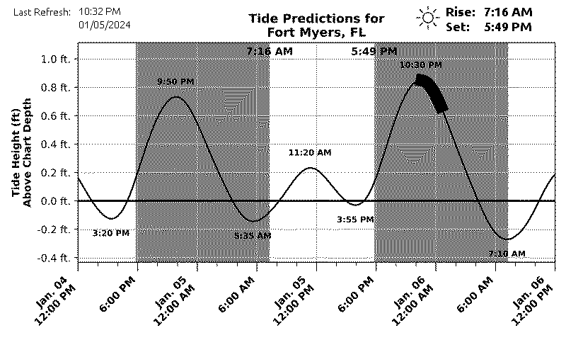
Chart Elements:
- The y-axis represents the tide height*, and the x-axis represents time.
- The black bar along the curve represents the current section corresponding to "now."**
- The light regions represent daytime and the dark shaded regions represent nighttime.
- When midnight passes, the entire graph shifts so that the center always focuses on noon of "today."
- Sunrise and sunset are displayed in the upper-right corner and on the plot.
- High tide and low tide times are displayed near the corresponding peaks and valleys.
*height: The data used for the y-axis is measured as the present water level height relative to a standard average water level height (the reference datum). The reference point used is the mean lower low water (MLLW) level, defined as the average low tide level over the past measurement period (typically 19 years).
**"now": My initial desire was to represent "now" by using a single point on the graph. However, this would require the entire screen to be continuously refreshed. To conserve power, the device only updates once every two hours, so "now" is represented as a sweep along the curve corresponding to the 2-hour refresh interval.
Power
The tide tracker contains a 4500mAH LiPo battery and can run on its own for several days. To charge the device, there is a USB-C port and five JST connectors for solar panels.
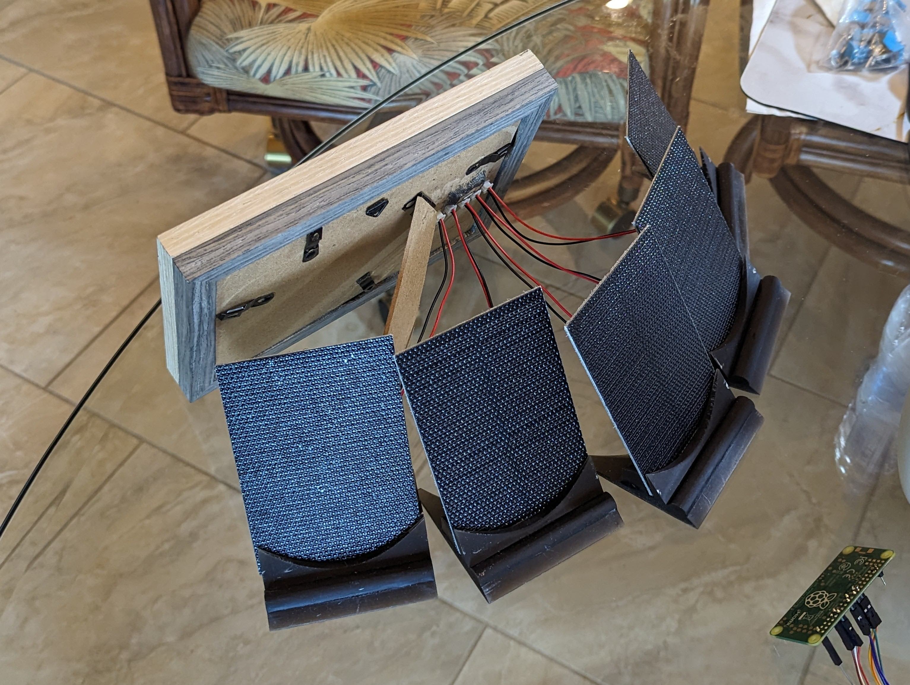
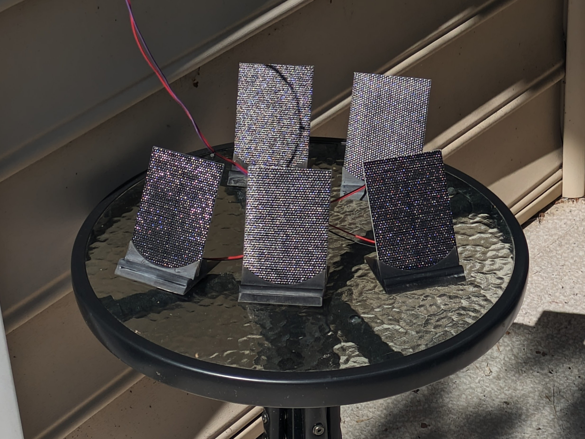
I also designed and resin printed custom stands for the solar panels:
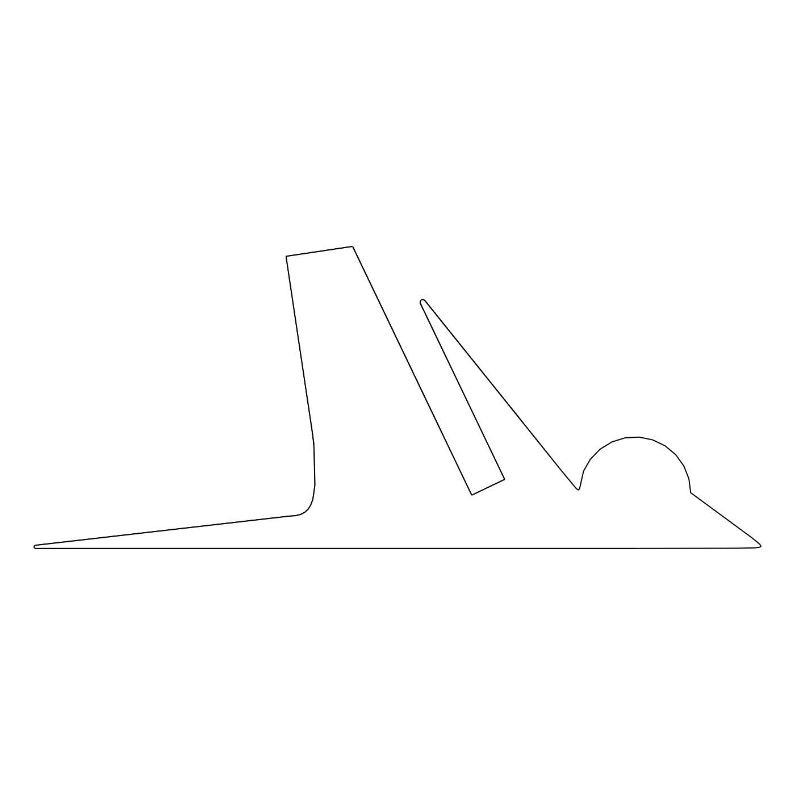
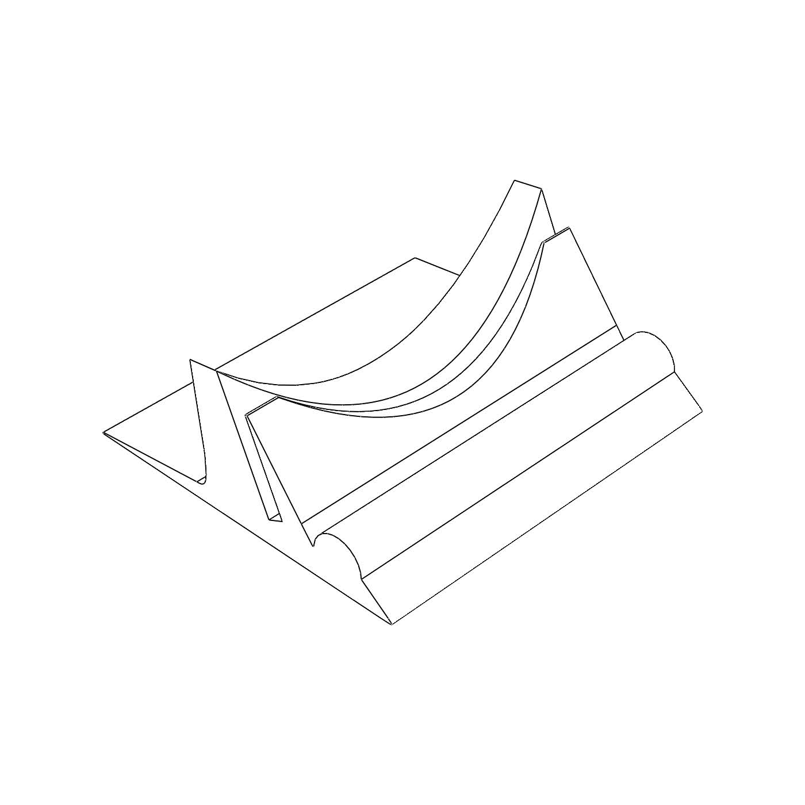
Extensibility: Varying the Location or Network
What if my friend moves and wants to track tides at a different location? What if they change their Wi-Fi? I included a webpage hosted on the device for configuring settings.
If the device becomes disconnected from Wi-Fi, the error image below appears on screen.
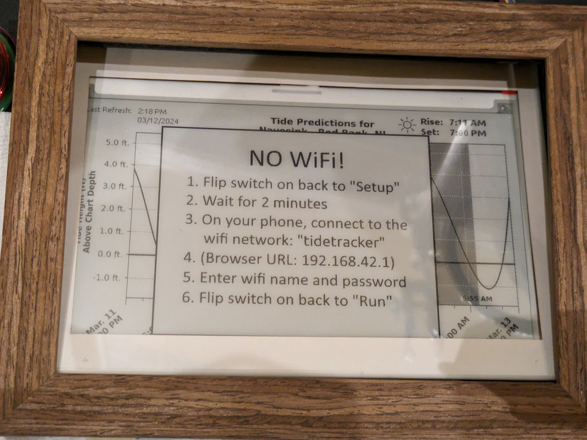
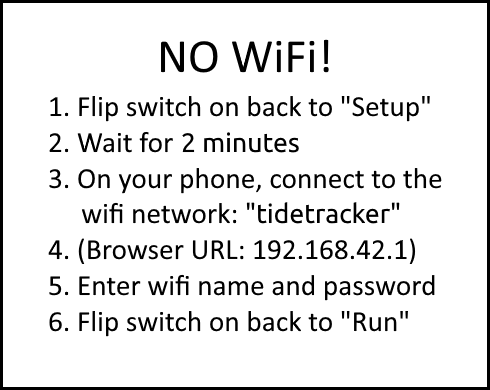
The user can then toggle the settings switch to "Setup" mode, which boots the Raspberry Pi into a mode that broadcasts a Wi-Fi hotspot and hosts the settings webpage.
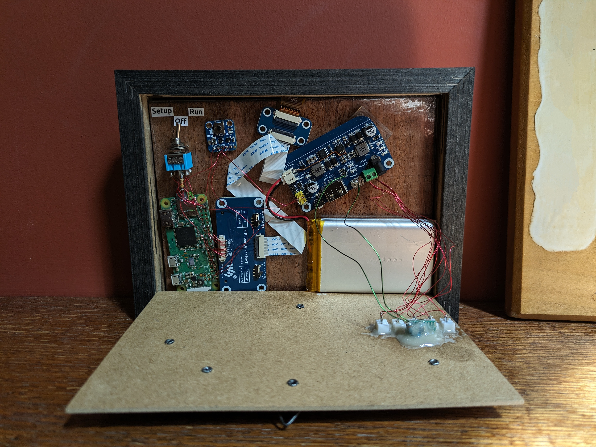
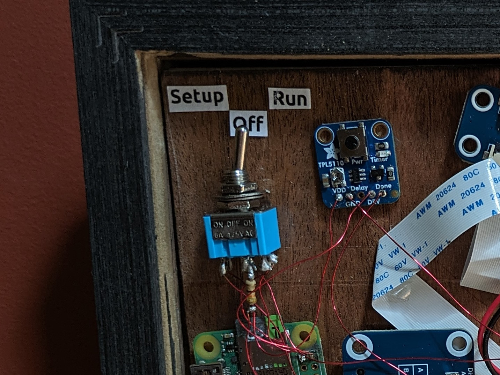
On a mobile device, the "tide-tracker" Wi-Fi network becomes visible:
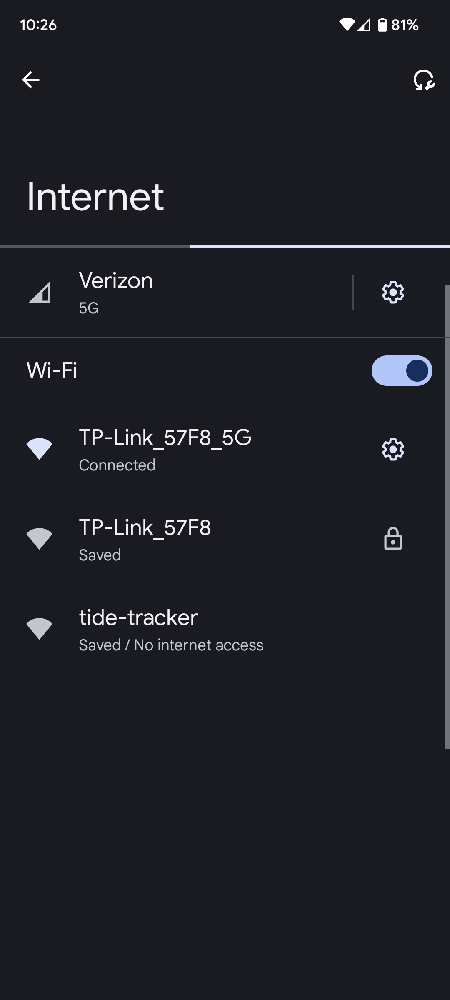
Upon connecting, the configuration page opens in a web browser where the Wi-Fi credentials and NOAA station can be set:
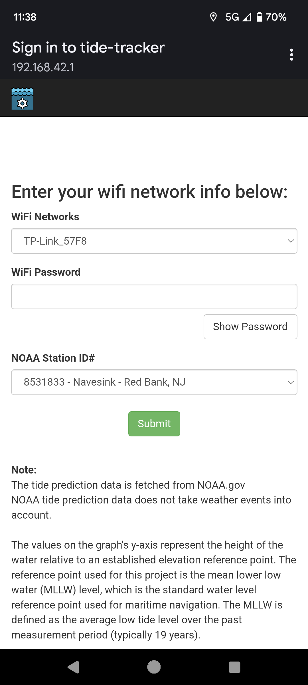